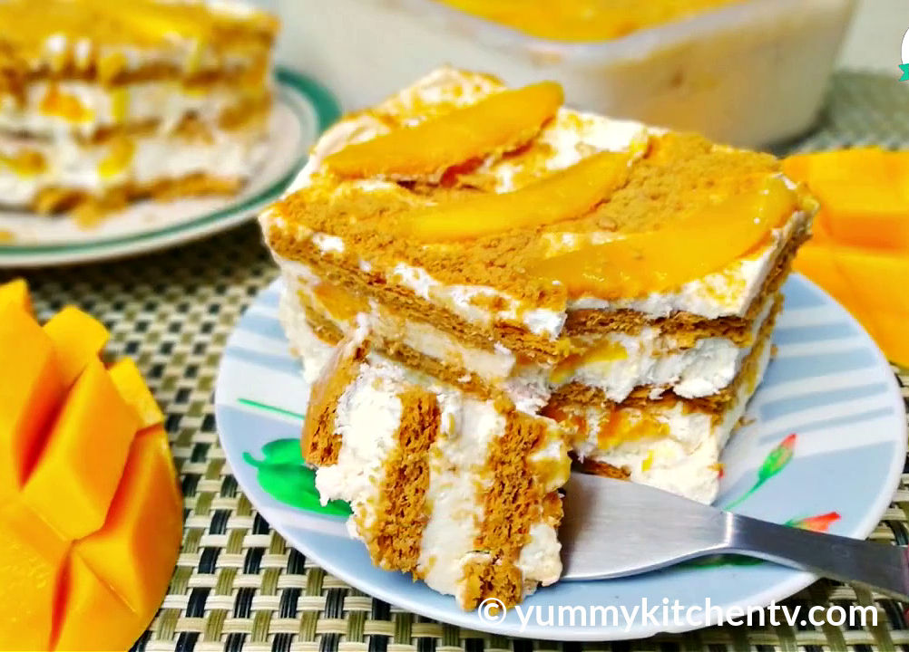

Graham Mango Float
Filipino mango float is a no-bake dessert made with layers of graham crackers, cream,
and ripe mangoes. Simple yet delicious, it requires only a handful of ingredients and is best chilled overnight so the cream sets and the crackers soften. Light, creamy, and perfectly sweet, it’s a refreshing treat ideal for hot summer days.

Ingredients
- 1 tablespoon of crushed graham
- 20 pieces Graham crackers
- 1 cup all purpose cream or coolwhip
- 3/4 cup condensed milk
- 2 cups of mangoes thinly sliced
Instructions
- Arrange 8–10 graham crackers in a rectangular dish.
- Transfer the tamarind broth to a pot and bring it to a boil.
- In a bowl, mix cream, or cool whip, with condensed milk.
- Spread the mixture over the crackers, then layer thin mango slices on top.
- Repeat with more crackers, cream, and mangoes to create several layers.
- Finish with mangoes and crushed grahams on top.
- Chill for at least 3 hours before serving.